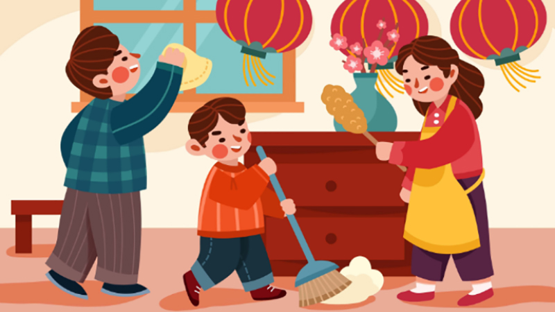
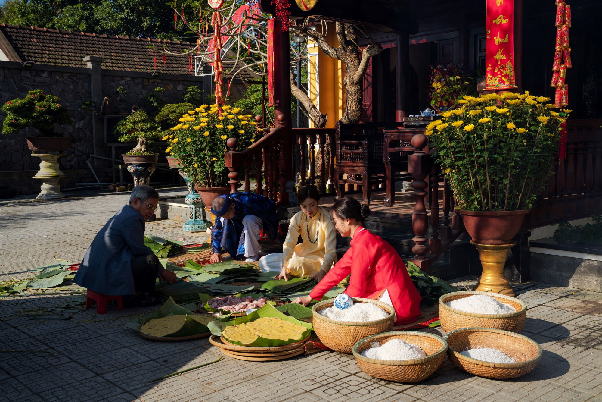

Tết cổ truyền Việt Nam gắn liền với nhiều phong tục đẹp như: dọn dẹp nhà cửa, cúng ông Công ông Táo, gói bánh chưng – bánh tét, chúc Tết, lì xì đầu năm, du xuân và đi lễ chùa cầu bình an.
 Đây là những giá trị văn hóa lâu đời thể hiện tinh thần gia đình, lòng hiếu kính và ước mong năm mới an khang, thịnh vượng.
⬅ Quay về website Xuân 2026